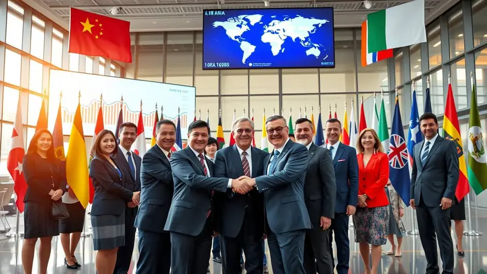
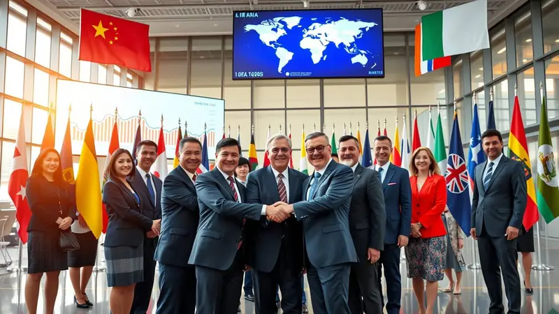

Apa itu kerja sama multilateral?
Kerja sama multilateral adalah kerja sama yang dilakukan oleh lebih dari dua negara melalui organisasi internasional seperti PBB, World Bank, ADB, dan lain-lain. Tujuan dari kerja sama multilateral adalah menyatukan banyak negara untuk bekerja bersama dalam mengatasi masalah global, seperti kemiskinan, melalui dukungan pendanaan internasional, penelitian global, dan program pembangunan berkelanjutan. Selain itu, kerja sama multilateral berfungsi untuk menciptakan solusi bersama yang lebih besar, memastikan bantuan tepat sasaran, dan mendorong komitmen dunia untuk menghapus kemiskinan ekstrem.
Kerja sama multilateral berkaitan dengan SDGs 1 karena melibatkan banyak negara dan organisasi internasional yang bekerja sama untuk mengurangi kemiskinan secara global. Dengan adanya kerja sama ini, negara-negara dapat memperoleh bantuan dana, dukungan teknis, program pembangunan, hingga pertukaran kebijakan yang efektif. Lembaga internasional seperti PBB, Bank Dunia, dan UNDP menyediakan pendanaan untuk perlindungan sosial, peningkatan layanan kesehatan, pendidikan, dan pembangunan ekonomi. Selain itu, kerja sama multilateral membantu neagra mengatasi tantangan besar yang mempengaruhi kemiskinan, seperti perubahan iklim, ketidakstabilan ekonomi, dan bencana.
Kerja sama multilateral juga memberikan keuntungan karena negara-negara dapat saling belajar dari pengalaman satu sama lain. Melalui forum internasional, negara dapat mengetahui strategi pengentasan kemiskinan yang berhasil di negara lain dan menyesuaikannya dengan kondisi dalam negeri. Selain itu, kerja sama ini menciptakan standar global dalam perlindungan sosial, pendidikan, kesehatan, dan penanggulangan bencana sehingga upaya mengurangi kemiskinan menjadi lebih terarah dan terukur.

 
